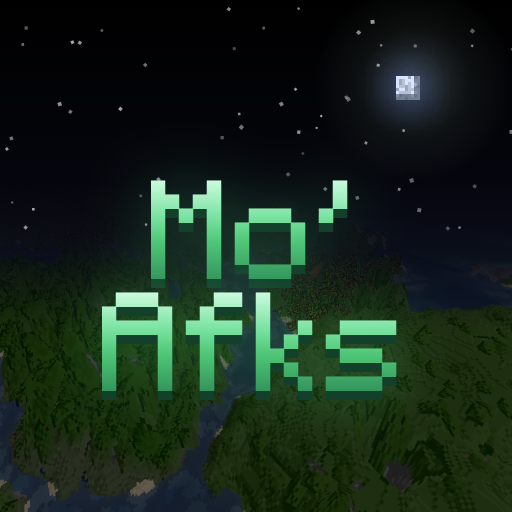
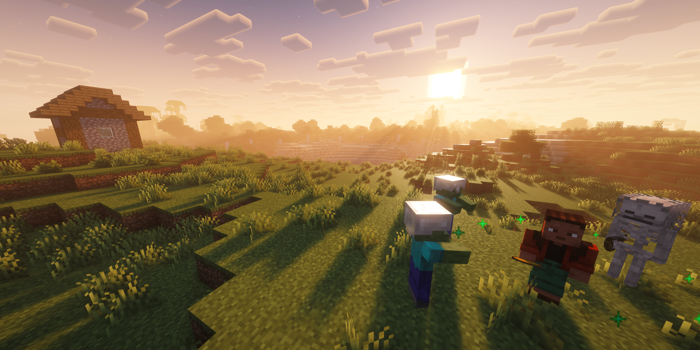

Mo’AfksStep away.
Stay safe.
A safe AFK mode for Paper: no damage, no pushing, no mobs, and the night still passes.
» Lena stepped away: making dinner
« Lena is back after 12 min.


Mo’AfksA safe AFK mode for Paper: no damage, no pushing, no mobs, and the night still passes.